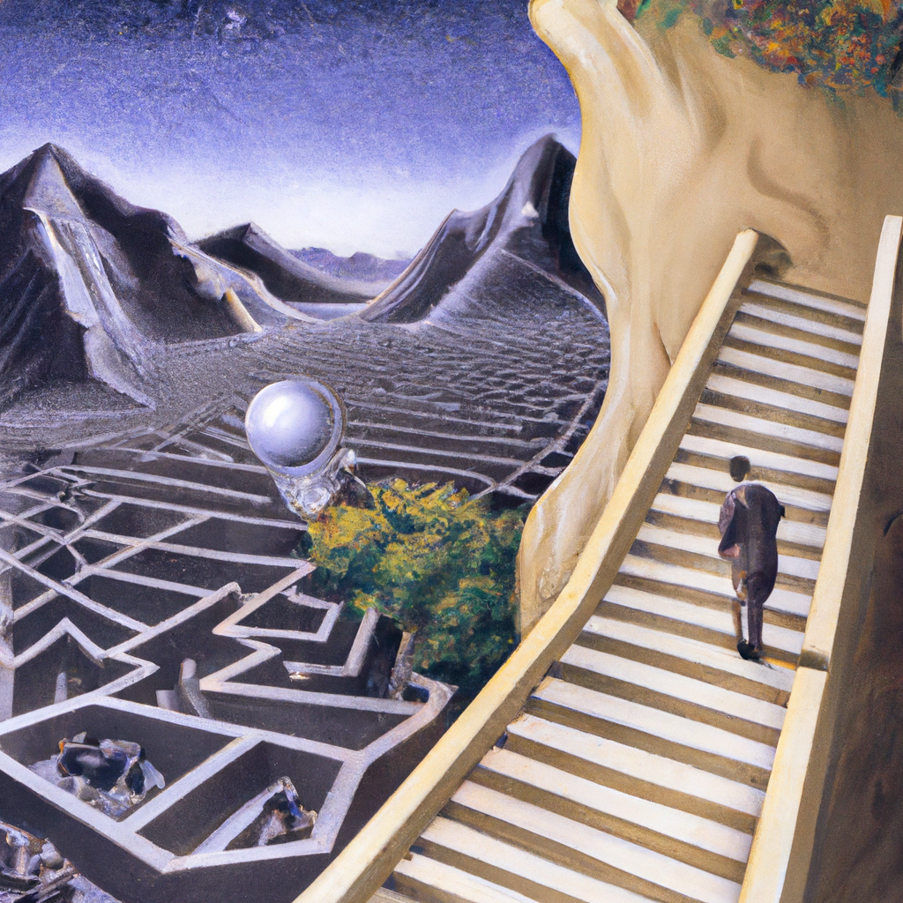

Why AI will never replace a mathematician
In recent years, Artificial Intelligence (AI) and Machine Learning (ML) have advanced in leaps and bounds, and many people now believe that it can be used to automate the work of mathematicians. The logic goes that if AI can be used to automate other tasks such as driving cars, then it should be able to automate mathematics too. Unfortunately, this is not the case.
The main problem with using AI to automate mathematics is that it cannot understand the mathematical concepts and problems in the same way that a human can. AI relies on algorithms and data sets to identify patterns and make predictions, but it cannot comprehend the underlying meaning of the mathematics. This makes it difficult for AI to recognize the logical connections between different mathematical concepts, which is essential for accurate theorem proving.
In addition, AI is not capable of dealing with abstract mathematical concepts such as infinity or imaginary numbers. This prevents AI from being able to accurately solve some of the most complex problems in mathematics.
Finally, AI lacks intuition and creativity, which are essential components of any mathematician’s work. AI can be used to identify patterns and suggest solutions, but it cannot come up with creative solutions or ideas that a human mathematician can.
In conclusion, AI and ML can be used to automate certain aspects of mathematics, but they will never be able to completely replace a human mathematician. AI lacks the understanding, intuition, and creativity required to solve complex mathematical problems. As such, mathematicians will continue to be essential for years to come.